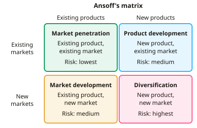

A-level Business Year 13 · Topic 7
Choosing strategic direction
This topic is about choosing a strategic direction, which markets to compete in and how to win in them.
We use Ansoff's matrix, Porter's generic strategies and Bowman's strategic clock, and see how functional strategies support the plan.
We finish with retrenchment and turnaround, for when a business needs to shrink or recover.
- 5 subtopics
- 186 questions
- Free: 7.1 notes and 10 questions
In this topic
- 7.1Ansoff's matrix: choosing products and marketsFree below · 73 questions
- 7.2Porter's generic strategiesOpen in Full Marks · 31 questions
- 7.3Bowman's strategic clockOpen in Full Marks · 27 questions
- 7.4Functional strategies: operational, financial, marketing and HROpen in Full Marks · 27 questions
- 7.5Retrenchment, divestment and turnaround strategiesOpen in Full Marks · 28 questions
7.1 · Free notes
Ansoff's matrix: choosing products and markets

Key points
- Ansoff's matrix (Igor Ansoff, 1957) is a strategic planning tool. It shows four growth options, based on whether products and markets are existing or new.
- Market penetration sells existing products in existing markets. It aims to raise market share through promotion, price cuts or loyalty schemes. It is the lowest-risk option.
- Product development sells new products to existing markets. It needs R&D spending, but the firm already understands its customers. Risk is medium.
- Market development sells existing products in new markets, such as new countries, new segments or online channels. The risks are poor market knowledge and cultural, legal or distribution differences. Risk is medium.
- Diversification means new products in new markets, so it is the highest-risk option. It can be related or unrelated (conglomerate). Its main benefit is spreading risk across different markets.
- Risk generally rises as a firm moves away from its core products and customers. Higher-risk options may offer higher potential returns.
- Choice of strategy depends on risk appetite, available finance, market growth or saturation, the firm's core competences, competitor reactions and corporate objectives.
- Key calculations: market share = firm sales ÷ total market sales × 100. Percentage growth = change ÷ original × 100. Expected value = profit × probability of success.
- Limitations: it is a simple, static model. It ignores the firm's resources and capabilities and competitor reactions. It gives no method (organic growth, takeover, joint venture) and does not rank the options.
- Exam technique: apply to the context and use the numbers given. Justify with risk, cost and timescale, then reach a supported judgement.
In more detail
- Worked comparison: market development has a 0.7 chance of £2m profit and a 0.3 chance of a £0.5m loss → EV = £1.25m. Diversification has 0.4 × £5m and 0.6 × −£1m → EV = £1.4m, but a much bigger risk of loss.
- Diversification example: Virgin has diversified from music into airlines, trains, mobile phones and financial services, using one brand across unrelated markets.
- Market development example: UK retailers selling overseas through their websites are taking existing products into new markets.
- When it goes wrong: Tesco closed its US chain Fresh & Easy in 2013 after losses of over £1bn, showing the risk of market development.
Practice
Ansoff's matrix: choosing products and markets: 10 questions
Pick an answer to check it, or open the answer for the explanation.
1. Which Ansoff strategy involves selling new products in new markets?
- Diversification
- Market development
- Product development
- Market penetration
Show answer
A: Diversification. Diversification is the only option with both new products and new markets. It is therefore the highest-risk strategy in Ansoff's matrix.
2. A UK bakery chain opens its first shops in Germany selling its existing range. Which Ansoff strategy is this?
- Diversification
- Market development
- Market penetration
- Product development
Show answer
B: Market development. Existing products are being sold in a new market (a new country), which is market development.
3. A smartphone maker launches a new smartwatch aimed at its existing customers. Which Ansoff strategy is this?
- Market development
- Diversification
- Product development
- Market penetration
Show answer
C: Product development. A new product sold to the existing market is product development. It usually needs R&D investment.
4. A firm has an 8% share of a £250m market. A penetration strategy aims for 10% of the same market. What extra annual sales does this mean?
- £25m
- £20m
- £5m
- £2m
Show answer
C: £5m. Extra share is 2 percentage points. 2% × £250m = £5m. Market penetration grows share within the existing market.
5. Diversification: £6m profit, 25% chance of success. Market penetration: £2m, 80% chance. Which statement is correct?
- Diversification is higher: £1.5m against £0.8m
- They are equal at £1.5m each
- Penetration is higher: £1.6m against £1.5m
- Diversification is higher: £6m against £2m
Show answer
C: Penetration is higher: £1.6m against £1.5m. Expected value: 6 × 0.25 = £1.5m; 2 × 0.8 = £1.6m. Penetration is slightly higher and lower risk.
6. Why is diversification usually the riskiest Ansoff option?
- It always requires a takeover
- The firm lacks experience of both the product and the market
- It cannot be financed with retained profit
- It reduces sales in existing markets
Show answer
B: The firm lacks experience of both the product and the market. Moving away from both its known products and known customers removes the firm's experience, so failure is most likely.
7. Which of these is an example of market penetration?
- Launching a loyalty scheme to raise repeat purchases
- Adding a new flavour range
- Buying a firm in an unrelated industry
- Exporting existing goods to Brazil
Show answer
A: Launching a loyalty scheme to raise repeat purchases. Loyalty schemes and promotion aim to sell more existing products to existing markets, which is market penetration.
8. A chocolate manufacturer starts producing sportswear. This is best described as:
- Related diversification
- Product development
- Unrelated (conglomerate) diversification
- Market development
Show answer
C: Unrelated (conglomerate) diversification. The product and market are both new, with no link to the existing business. That is unrelated (conglomerate) diversification.
9. Which is a valid limitation of Ansoff's matrix?
- It cannot be used by service firms
- It identifies the single most profitable option
- It ignores the firm's resources and capabilities
- It only applies to firms with over 50% share
Show answer
C: It ignores the firm's resources and capabilities. The matrix gives options but does not test whether the firm has the finance, skills or capacity to deliver them.
10. Which statement about product development is correct?
- It sells existing products in new markets
- It relies on cutting prices to gain share
- It is the lowest-risk option
- It involves new products for existing markets, often needing R&D spend
Show answer
D: It involves new products for existing markets, often needing R&D spend. Product development means new products for existing customers. R&D and launch costs are the main risks.
Keep going in Full Marks
Full Marks has 73 questions on Ansoff's matrix: choosing products and markets (63 more than here), set out in practice levels. You also get notes and 3D models for all 5 subtopics of Choosing strategic direction, plus games, timed exams and past papers.